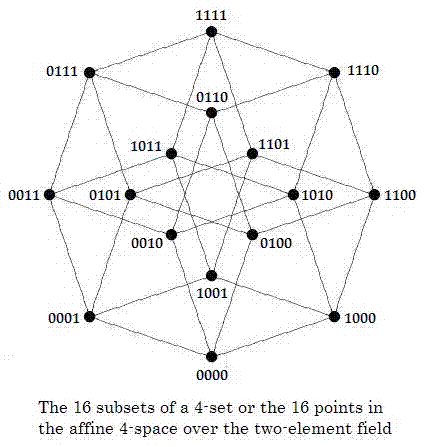
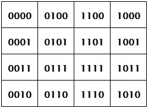
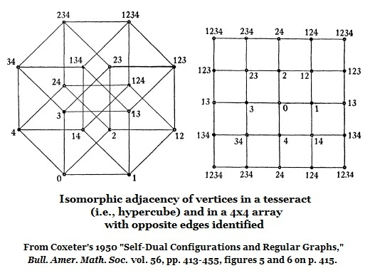

| Finite Geometry
Notes
|
Vertex
Adjacency in a
Tesseract (4D
Hypercube)
and in a 4×4 Array


The same 16 subsets or
points can
be arranged in a 4×4 array that has,
when the array's opposite edges are
joined together, the same adjacencies
as those of the above tesseract.
Thus the 4×4 array is also a tesseract, which,
because of its usefulness in picturing Galois
geometry, we may call the Galois tesseract.
The same sort of figures
appeared in
a 1950 paper by H. S. M. Coxeter—

Page created August 12, 2012, by Steven H. Cullinane. Last modified on May 28, 2013.